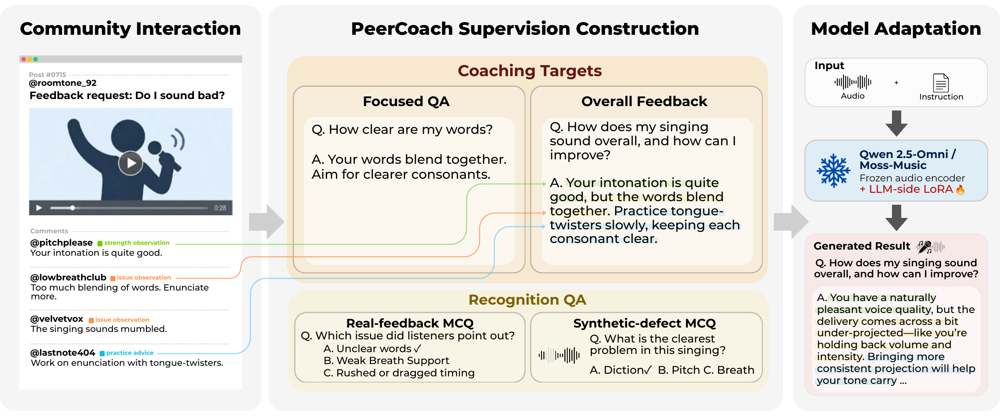

PitchIn learns to give natural-language singing feedback from observations and advice shared in singing communities. We build PeerCoach by reconstructing these interactions into instruction examples, then adapt Qwen2.5-Omni and MOSS-Music using Focused QA and Overall Feedback. At inference time, the model needs only a recording and a question.
Audio Examples
Selected full recordings with unedited responses from pretrained Qwen2.5-Omni-7B and PitchIn-Q. Notes compare the responses with expert references.
Question
Unable to load this recording.
PitchIn-Q
FQA + OFTry PitchIn
Upload a singing clip and ask a question. English questions recommended.
BibTeX
Manuscript, 2026